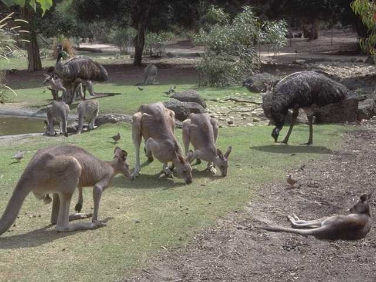
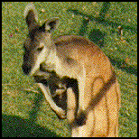
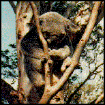
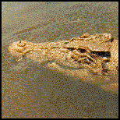
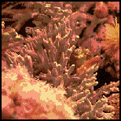

Many unusual types of animals called marsupials are found on the island continent of Australia. Marsupials are unusual because the mother has a pouch on her stomach in which she carries her young. Some Australian marsupials are kangaroos and koala bears. Crocodiles are reptiles that live in Australia as well as other parts of the world. Off the coast of Australia is a coral reef called the Great Barrier Reef.

Kangaroos stand tall by balancing on their big hind feet and thick tail. They can move very quickly by jumping in long leaps. A young kangaroo is called a "joey."

Koala bears look like teddy bears come to life. They only eat the leaves of a few trees that live in Australia. Because the leaves are not very nutritious, the little bears have to move slowly to conserve energy. They spend a lot of time sleeping.

The crocodile is a fierce animal that will attack any animal that comes near it. Although clumsy on land, it is an excellent swimmer. It spends much of its time drifting quietly under the surface of the water with only its eyes and nose showing.

The Great Barrier Reef is a coral reef. Coral reefs are made of many tiny animals. As these animals grow, they build mini-fortresses around themselves. As the animals multiply, their fortresses join to form large structures in the ocean. Coral reefs provide food and shelter to many brightly colored fish that live in the sea.